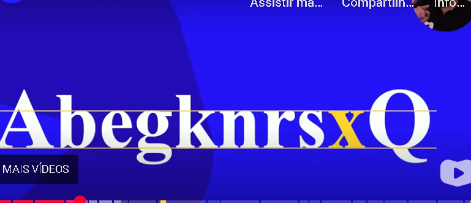

a maioria dos navegadores atuais usam Times New Roman
esse modelo é Arial, troquei pq se colocar times new roman n altera
a anatomia das letras funciona assim, o tamanho das letras minúsculas é de acordo com a altura do x minúsculo
são 5 categorias de fontes
1 serifadas
sem serifas
monoespaçadas
escritas a mão ou "handwritting"
display

serifadas são as fontes que possuem as serifas, que são os traços que ficam nas extremidades das letras